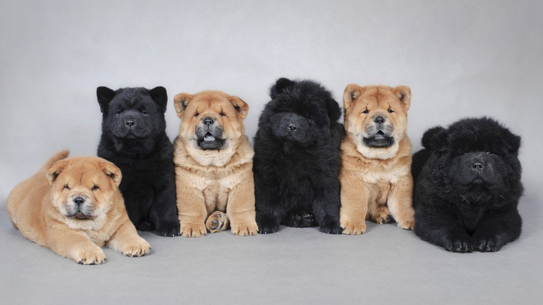

Чау чау в перекладі з китайської означає кудлатий лев. Історія виникнення породи бере свій початок з найдавнішої епохи, про що свідчать ДНК-дослідження тварин. Чау чау позначається, як сторожовий собака. В її крові (за різними даними) знаходили гени шпіців і тибетського дога.
Численні дослідження показали, що дана порода собак є однією з перших, що еволюціонували від вовка на території Монголії і Китаю. На одному з барельєфів тих земель зображена собака дуже схожа на чау чау. Цей малюнок був зроблений 150 років до н. е. Свого часу в буддійських монастирях розводили цю чистокровну породу. Освіження крові домагалися шляхом обміну собак між монастирями. До Європи чау чау потрапила тільки на початку 17 століття, так як територія Китаю була закрита для багатьох мандрівників. Чау чау має прекрасну густою шерстю, яка може бути тільки п'яти забарвлень. Всі поширені кольори: рудий; чорний; кремовий; блакитний (срібло); коричневий (цімт). Висота собаки в загривку може досягати - 58 см. А максимальна вага чау - 32 кг.
Сьогодні сторожова собака потрапляє в будинок в ролі домашнього улюбленця і стає відмінним компаньйоном. Це собака властолюбива, вона не любить незнайомих гостей і дуже ревно ставиться до своїх речей. Такі риси характеру можуть стати неприємним сюрпризом для власників, раніше незнайомим з породою. Але чау чау також вихований пес. Він не виявляє ні агресії, ні боязкості, а завжди "тримає обличчя". Собака залишається вірна своїй родині і завжди слідує за господарем. Вихованці не демонструють свою любов кожному, вони показують слабкість тільки тим, з ким проживають в одному будинку. Новій людині в будинку не варто вимагати уваги від чау, це не припаде до смаку великому вихованцеві.
Недосвідчені заводчики породи повинні бути готові, що чау чау сам може сприйняти когось із домашніх, як чужого. Інші пси в будинку можуть стати їх ворогами. У кращому випадку ужитися під одним дахом зможуть самка і самець цієї породи. Але спокійним і мирним їх співжиття не можна буде назвати.
Чау чау можна віднести до пасивної породи собак. Їх влаштовує квартирне життя, якщо вони отримують можливість отримати щоденне фізичне навантаження. Собака може здатися відчуженою і незалежною, але тим не менше вона завжди “напоготові". Якщо в будинку є гості, вона вважає за краще спостерігати за ними, не відходячи від вхідних дверей. Для правильного розумового і фізичного розвитку чау чау, її необхідно щодня вигулювати, придумуючи максимально жваві фізнагрузки. І хоча ці вихованці злегка пасивні, вони із задоволенням чекають того моменту, коли прийде час ігор і прогулянок на свіжому повітрі.
Чау чау вимагає якісного догляду. Адже перше, що привертає до неї увагу - густа шерсть. Собаку доведеться часто купати і вичісувати. До цього вихованця необхідно привчати з самого раннього віку, інакше потім він буде противитися процедурі. Щоденне вичісування улюбленця позбавить його господарів від клубків шерсті по всьому будинку. Купання пса повинні бути регулярними, але не занадто частими. Щотижневих водних процедур буде досить для собаки.
Перед купанням чау необхідно вичесати і зістригти ковтуни. Собаку слід намилити два рази, стежачи за тим, щоб помився підшерсток. Змивають шампунь довго і якісно. Його залишки на шкірі можуть стати причиною дерматиту у собак. По закінченню процедури собаку витирають рушником і сушать її шерсть феном.
Спочатку псина з підозрою буде відноситься до приладу, але потім звикне і стане засинати під час сушки після купання.
До харчування цих тварин ставляться максимально відповідально. Китайці схильні до алергій. Годувати чау чау можна кашами (рисовими і гречаними), овочами (капуста всіх видів, кабачок, буряк), нежирним м'ясом (кролик, яловичина, телятина, курка), субпродуктами яловичини, кисломолочними продуктами (сир, кисломолочний сир, кисле молоко, кефір).
Сухий корм і консерви для чау чау підбирають дуже ретельно. Неприпустимо згодовувати їм дешевий корм. Нову страву вводять в раціон собаки поступово. Спочатку дають маленьку порцію і спостерігають за твариною протягом дня. Це час покаже чи підходить продукт для організму чау чау. І якщо алергічних реакцій і змін в собаки не було, дають повноцінну порцію.
Заборонено давати вихованцям копчені і смажені продукти. Також не рекомендується згодовувати собаці солодке і мучне.
Щоб виростити цуценя вихованою і видресируваною собакою, потрібно докласти чимало зусиль. Спочатку важливо навчити собаку слухатися і підкорятися господареві. У спілкуванні з вихованцем потрібно проявляти силу характеру. Якщо він відчує зворотнє, авторитет господаря буде підірваний. Коли чау чау займає лідерську позицію, змістити собаку з неї неможливо.
Вроджена недовіра до незнайомців викликає агресію до всіх гостей будинку. Саме з цієї причини, перше, чого навчають чау чау - соціалізації. Вона повинна запам'ятати команду "Фу" і вивчити поняття слів "Свій" і "Чужий".
Рання соціалізація допоможе вихованцеві в подальшому. Тому, завівши цуценя, його відразу ж потрібно намагатися вигулювати в місцях скупчення людей - в парках і дворах.
При гарчанні на якусь людину чи іншу тварину, чау потрібно заспокоїти, раз по раз пояснюючи їй, що все гаразд.
Позитивною рисою у вихованні собаки є її охайність. Маленькі вихованці з перших днів запам'ятовують, де знаходиться лоток або вчаться терпіти до прогулянки на вулиці. У другому випадку потрібно допомогти тварині і виводити його на вулицю після сну або прийому їжі. Бувають випадки, коли чау чау не може дозволити собі сходити в туалет кілька діб, коли, наприклад, господар терміново був викликаний у відрядження і не залишив нікому з родичів ключі від квартири. Собака насправді схильна терпіти до останнього.
Що стосується дресирувань, то підпорядкувати собі чау чау дуже складно. Розумна собака не буде виконувати дурні, на її погляд, команди. Тому, якщо господар не впевнений в своїх силах, краще довірити дресирування пса професіоналу.
Для чау чау не підходить метод навчання за допомогою "батога і пряника". Більше до вподоби їй буде клікерна методика дресирування. У ній відсутнє покарання тварини, а заохочення відтягується до отримання хорошого результату.
Чау чау не схильні до виконання службових команд на витримку. Залишатися в одній позі тривалий час тварина вважатиме недоцільним заняттям. Прості команди теж виконуються вихованцями не так, як хотілося б.
Почувши наказ, собака подумає, оцінить ситуацію і в кращому випадку знехотя підкоряється. Якщо вона відчує натиск і силу господаря, вона виконає команду. В іншому випадку проігнорує пропозицію.
Строгість під час дресирування особливо потрібна з самцями. Вони при кожному зручному випадку будуть намагатися взяти лідерство "в свої лапи".